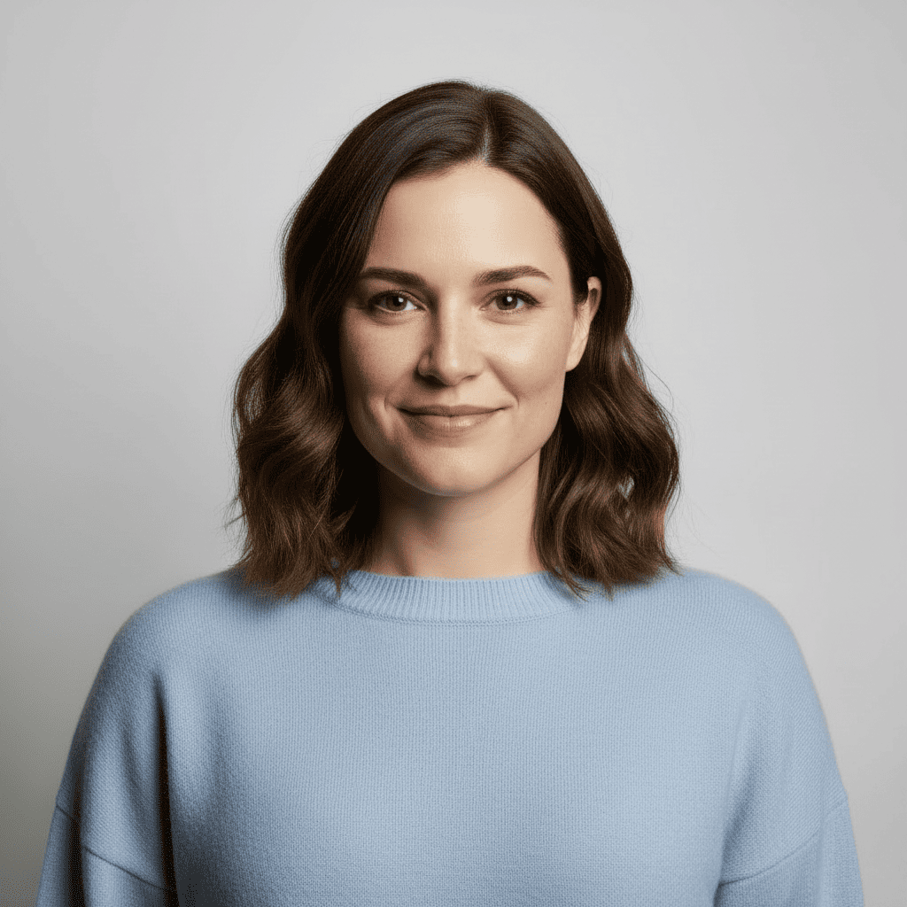
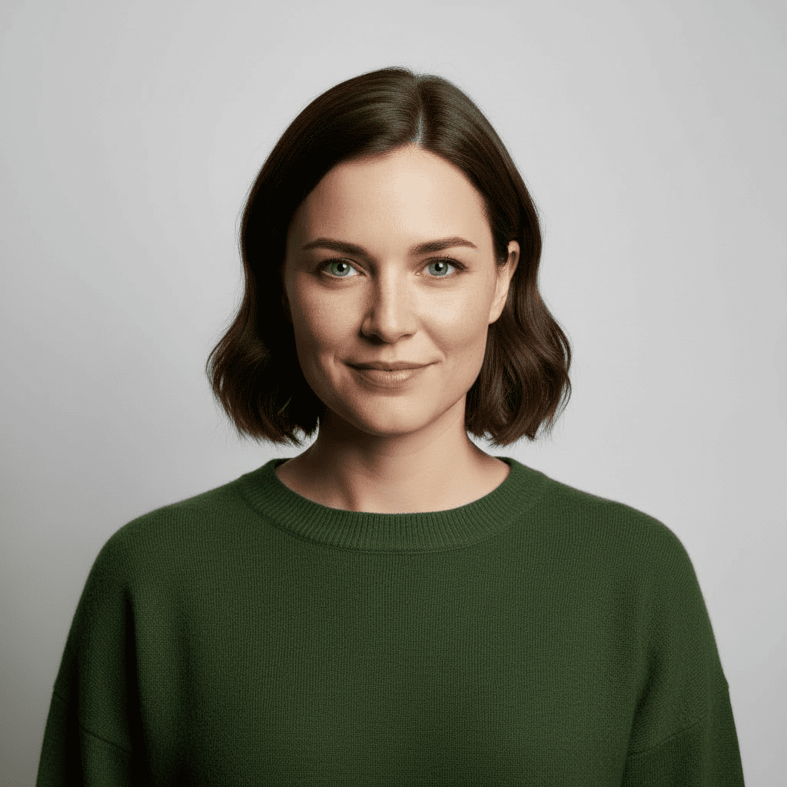
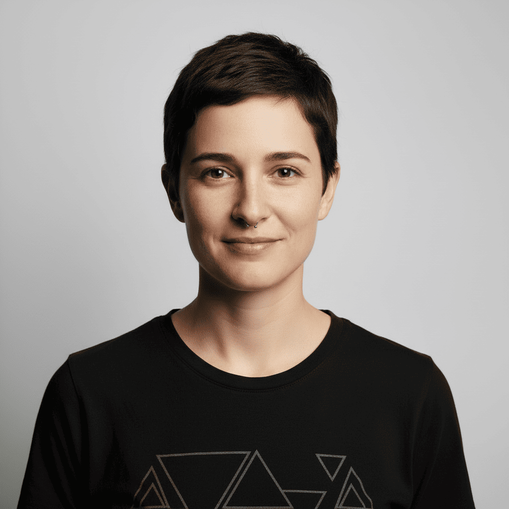
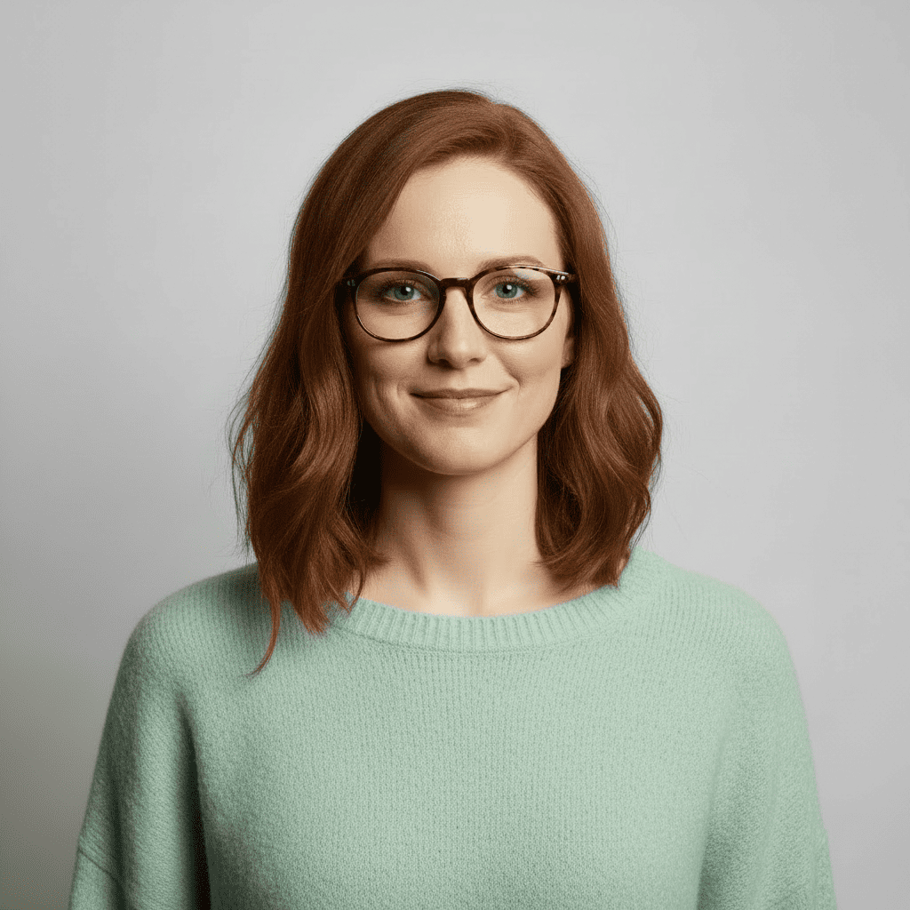
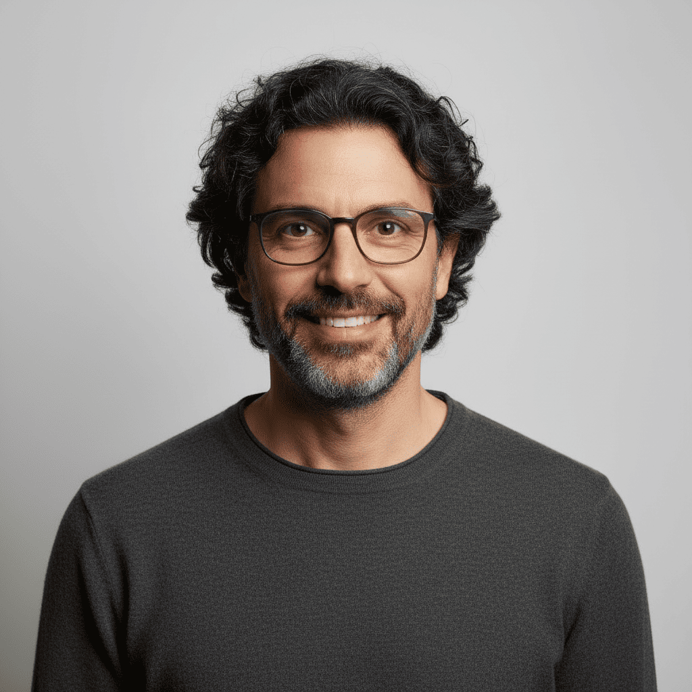
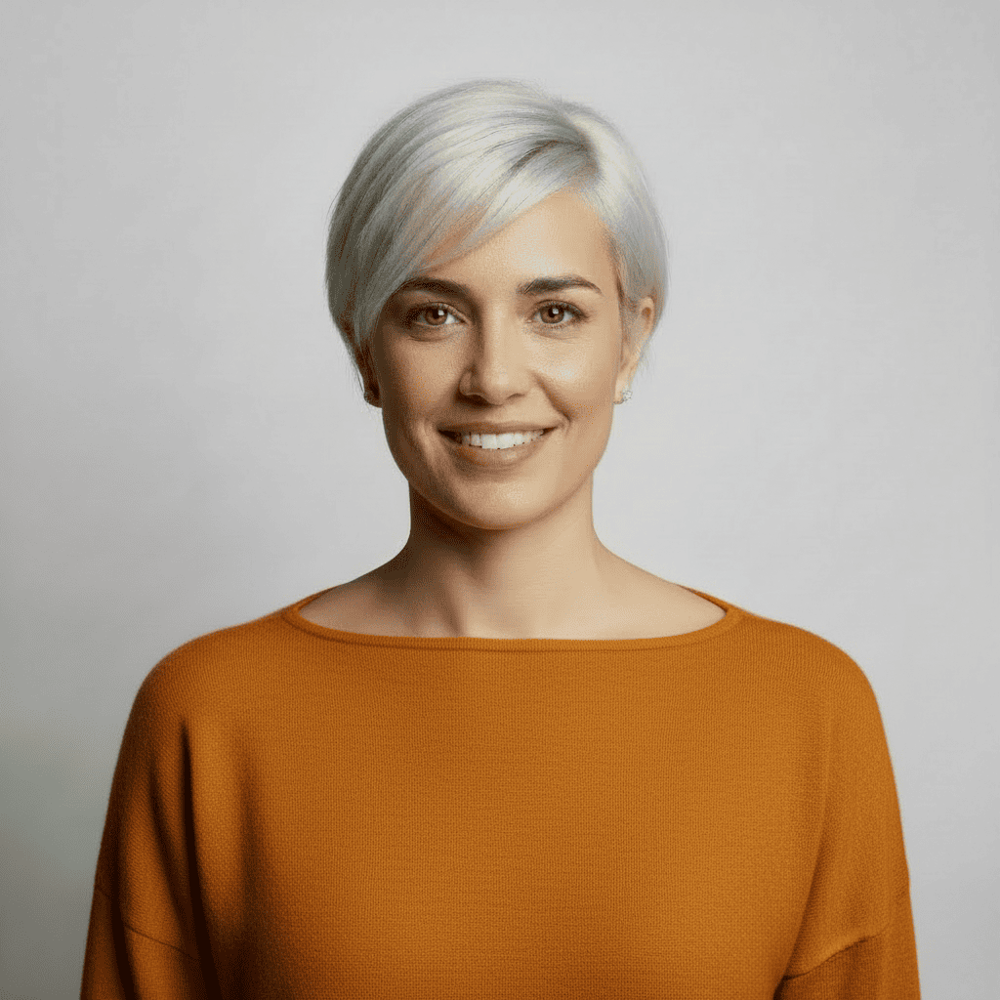

Les veus d'{Edito}Line
Coneix els autors que donen vida a les nostres històries. Escriptors emergents amb històries úniques que exploren nous territoris literaris.
Miquel Valls
Escriptor barceloní especialitzat en narrativa de superació personal. La seva prosa intimista convida els lectors a enfrontar-se als seus propis fantasmes i trobar llum en la foscor. Abans d'escriure, va treballar com a psicòleg clínic, experiència que impregna les seves obres d'una profunditat emocional única.
Obres publicades:
Pol Ametller
Nascut a les comarques gironines, Pol combina aventura i introspectió en històries que transformen els paisatges exteriors en viatges interiors. Apassionat del senderisme i la natura, les seves novel·les conviden a explorar tant el món com un mateix. La seva escriptura poètica i evocadora ha conquistat milers de lectors.
Obres publicades:
Bernat Domènech
Historiador i novel·lista, Bernat dedica anys a investigar els contextos socials que inspiren les seves obres. Les seves novel·les traslladen el lector a èpoques convulses on els personatges han de decidir entre ideals i supervivència. La seva escriptura combina rigor històric amb una narrativa trepidant que no et deixa indiferent.
Obres publicades:
Julianna Canet
Criada entre les muntanyes del Pirineu, Julianna crea universos fantàstics on la natura té vida pròpia i les llegendes catalanes es barregen amb la màgia més pura. La seva prosa lírica i sensorial transporta els lectors a mons on tot és possible. Amb una imaginació desbordant, redefineix el gènere fantàstic en català.
Obres publicades:

Júlia Puig
Humorista, guionista i escriptora valenciana que converteix els desastres quotidians en comèdies brillants. Amb un estil àgil i fresc, Júlia sap trobar l'absurd en el dia a dia i fer-nos riure dels nostres propis fracassos. Les seves novel·les són una teràpia contra el dramatisme i una celebració de la imperfecció.
Obres publicades:
Francesc Cornellà
Mestre del suspens i la tensió narrativa, Francesc crea thrillers urbans on la Barcelona més fosca cobra vida. Amb un estil directe i contundent, construeix trames enrevessades que mantenen el lector en viu fins a l'última pàgina. Ex-periodista d'investigació, coneix bé els racons obscurs de la ciutat que retrata.
Obres publicades:
Oriol Casamitjana
Psiquiatre de professió i escriptor per vocació, Oriol explora les ments més complexes i els abismes de la consciència humana. Les seves novel·les psicològiques són estudis clínics disfressats de ficció, on cada personatge és un cas clínic fascinant. La seva escriptura precisa i quirúrgica et fa qüestionar la pròpia percepció de la realitat.
Obres publicades:

Laia Serra
Escriptora empordanesa que teixeix narratives càlides sobre arrels, memòria i identitat. Les seves històries retornen sempre al poble, a la família, a les petites coses que ens fan ser qui som. Amb una sensibilitat especial per als vincles humans, Laia escriu obres que toquen el cor i ens reconnecten amb allò essencial.
Obres publicades:
Laura Torrents
Poeta i narradora, Laura escriu amb una delicadesa que commou. Les seves obres celebren la fragilitat i la bellesa de l'instant present, convertint el quotidià en extraordinari. Amb una prosa poètica i emotiva, Laura ha guanyat diversos premis literaris i ha tocat el cor de milers de lectors que busquen bellesa en les petites coses.
Obres publicades:
Roc Costa
Viatger empedreït i escriptor inquiet, Roc plasma en les seves novel·les les preguntes existencials de tota una generació. Les seves històries segueixen joves que busquen sentit en un món accelerat i confús. Amb una prosa lírica i honesta, Roc connecta amb els lectors que també busquen el seu propi camí.
Obres publicades:
Georgina Cercós
Coach, filòsofa i escriptora dedicada al creixement personal. Georgina inspira milers de persones a trencar les seves limitacions i abraçar el canvi. Els seus llibres combinen filosofia, neurociència i experiència pràctica per oferir eines reals de transformació. La seva veu honesta i propera fa que fins i tot les idees més complexes semblin accessibles.
Obres publicades:

Olivia Rabentós
Investigadora en intel·ligència artificial i divulgadora científica. Olivia fa accessibles els conceptes més complexos de la tecnologia actual sense perdre rigor. Els seus assaigs connecten ciència, creativitat i humanitat, mostrant com la tecnologia pot ser aliada del pensament creatiu. Una veu imprescindible per entendre el futur digital.
Obres publicades:

Marta Rovira
Sociòloga i experta en comunicació interpersonal. Marta analitza com ens comuniquem, com ens entenem (o no) i com podem millorar els nostres vincles. Els seus assaigs combinen teoria, casos reals i exercicis pràctics per ajudar-nos a connectar millor amb els altres. Una lectura essencial per a qualsevol persona que es relacioni amb humans.
Obres publicades:
Pau Coromines
Dissenyador gràfic i expert en pensament visual. Pau defensa que una imatge val més que mil paraules i demostra que comunicar visualment és una eina poderosa per a tothom. Els seus llibres estan plens d'exemples, diagrames i exercicis pràctics que transformen la manera com entenem i comuniquem idees complexes.
Obres publicades:

Marc Vila
Enginyer informàtic i divulgador tecnològic especialitzat en intel·ligència artificial. Marc desmunta mites i explica amb claredat com funcionen els algoritmes que ja governen part de les nostres vides. Els seus llibres són imprescindibles per entendre el present tecnològic i anticipar-se al futur amb criteri propi i sense por.
Obres publicades:

Anna Pujol
Psicòloga clínica amb un do especial per fer la ciència divertida i accessible. Anna explica amb humor per què el nostre cervell ens juga males passades i com podem sobreviure a la nostra pròpia ment. Els seus llibres són una barreja perfecta de rigor científic i entreteniment, convertint la psicologia en una aventura fascinant.